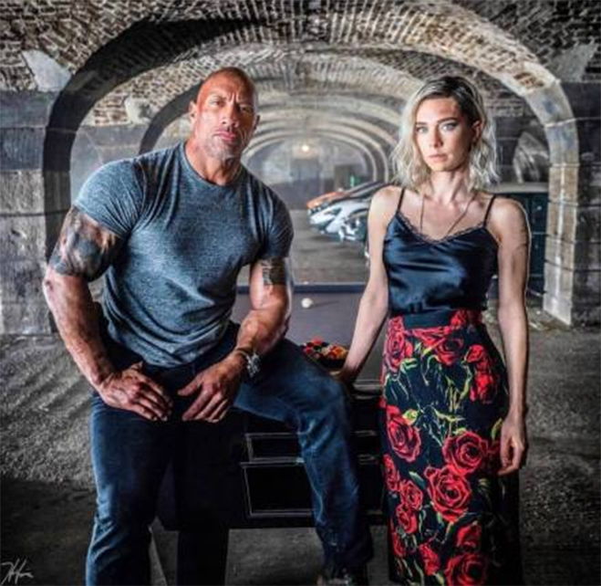

The story picks up where it left off, revealing Dominic's past and his relationship with his long-lost brother Jacob. Jacob is a top assassin and racer who develops a deep rift with Dominic due to a tragedy within the family many years ago. Jacob joins forces with a global crime Lord to seize an advanced technology that can control weapons systems across the globe. This forces Dominic to gather his team again in order to stop his brother's plot.
In a fierce pursuit and struggle across many parts of the globe, Dominic and his team must not only fight Jacob, but also guard against other external threats. Action scenes in the film include street racing and high-altitude stunts in London, Tokyo and Central Asia. In the course of revealing the importance of family and resolving remaining family disputes, Dominic struggles to reconcile with Jacob and uncover the secrets of their family's past. Through a series of dangerous missions and deep family conversations, Dominic and Jacob finally understand each other and team up to stop the evil forces' plans.
In a pivotal operation, Brian is forced to make a choice between continuing his police duties or helping Dominic, who has now become a friend, escape. In the end, Brian chose to help Dominic flee the scene, thereby betraying his identity as a cop.